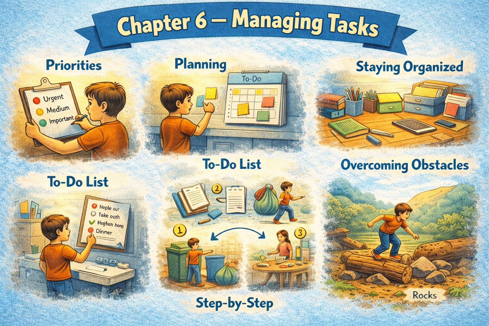

Chapter 6 — Managing Tasks

Micro Scene 1 — Starting a Task
1️⃣ Scene Text
Before I begin a new task, I usually clarify its objective.
I read through the requirements and identify the key constraints.
If the goal feels vague, I break it down into smaller parts.
I start with the simplest step to create initial momentum.
Sometimes I write a short outline to structure the process.
Once the first action is taken, resistance decreases.
Beginning is often the most difficult phase.
After I define the scope, the direction becomes clearer.
A task rarely feels manageable until it is properly framed.
Starting transforms uncertainty into movement.
The act of beginning shifts intention into execution.
2️⃣ Core Verb Pool
begin
clarify
read through
identify
break down
start
write
structure
define
frame
transform
shift
3️⃣ Structure Patterns
Before X + verb, Y + verb
If X + verb, Y + verb
I start with + noun
Once X + verb, Y + verb
X becomes + adjective
X transforms A into B
4️⃣ Replace & Extend
Replace the initiation:
I start with the simplest step.
→ I begin with the most urgent part.
→ I begin with a quick review.
Replace the resistance:
Beginning is difficult.
→ Getting started requires effort.
→ Initiation creates momentum.
Replace the transformation:
Starting transforms uncertainty into movement.
→ Planning transforms chaos into order.
→ Clarification transforms confusion into direction.
5️⃣ Spoken Mode
Before I start, I make sure I understand the goal.
If it feels unclear, I break it down.
I usually begin with something simple.
Once I start, it gets easier.
Getting started is the hardest part.
🔎 Structural Notes
• “break down” expresses decomposition.
• “Once…” signals shift after initiation.
• “transform A into B” marks structural change.
Micro Scene 2 — Prioritizing and Ordering
1️⃣ Scene Text
When multiple tasks compete for attention, I evaluate their urgency first.
Some tasks demand immediate action, while others can wait.
I rank them based on impact and effort.
High-impact tasks usually move to the top of the list.
If two tasks seem equally important, I consider the deadline.
Ordering tasks reduces cognitive load.
Once priorities are clear, decision-making becomes faster.
Sometimes I reorganize the sequence as new information appears.
Prioritization is not fixed; it adjusts with context.
The order of execution influences overall efficiency.
A clear hierarchy prevents unnecessary hesitation.
2️⃣ Core Verb Pool
compete
evaluate
demand
wait
rank
consider
reduce
reorganize
adjust
influence
prevent
3️⃣ Structure Patterns
When X + verb, Y + verb
Some X…, while others…
X is based on + noun
If X + verb, Y + verb
Once X + verb, Y + verb
X influences + noun
X prevents + noun
4️⃣ Replace & Extend
Replace the criterion:
I rank tasks based on impact and effort.
→ I rank tasks based on urgency and complexity.
→ I rank tasks based on risk and importance.
Replace the adjustment:
Prioritization adjusts with context.
→ The plan changes with new information.
→ The order shifts as conditions evolve.
Replace the effect:
A clear hierarchy prevents hesitation.
→ A clear structure prevents confusion.
→ A clear timeline prevents delay.
5️⃣ Spoken Mode
When I’ve got too many tasks, I figure out what’s urgent.
Some things need attention right away; others can wait.
I rank them by impact and effort.
If something changes, I adjust the order.
Having clear priorities makes decisions easier.
🔎 Structural Notes
• “compete for attention” expresses resource limitation.
• “based on” defines evaluation criteria.
• “adjust with context” signals dynamic structure.
Micro Scene 3 — Maintaining Focus and Momentum
1️⃣ Scene Text
Once I begin working on a task, maintaining focus becomes the next challenge.
I try to minimize interruptions and reduce unnecessary input.
If my attention drifts, I pause briefly and reset the direction.
Momentum builds gradually through sustained effort.
Small progress reinforces motivation.
When the pace slows down, I break the task into smaller steps again.
Sometimes I set a short time limit to intensify concentration.
The goal is not constant speed, but consistent movement.
If I stop for too long, restarting requires extra effort.
Focus depends on clarity and manageable scope.
Momentum is fragile but recoverable.
2️⃣ Core Verb Pool
maintain
minimize
reduce
drift
pause
reset
build
reinforce
slow down
break into
set
intensify
depend
recover
3️⃣ Structure Patterns
Once X + verb, Y + verb
If X + verb, Y + verb
X builds through + noun
When X + verb, Y + verb
The goal is not A, but B
X depends on + noun
X is + adjective but + adjective
4️⃣ Replace & Extend
Replace the difficulty:
Maintaining focus becomes the challenge.
→ Staying consistent becomes difficult.
→ Sustaining energy becomes demanding.
Replace the reset:
If my attention drifts, I reset.
→ If I lose momentum, I restart.
→ If I feel stuck, I reframe the task.
Replace the goal:
The goal is not constant speed, but steady progress.
→ The goal is not perfection, but completion.
→ The goal is not intensity, but sustainability.
5️⃣ Spoken Mode
Once I start, staying focused is the hard part.
If I get distracted, I pause and reset.
Momentum builds little by little.
If I stop too long, it’s harder to restart.
The goal isn’t speed — it’s steady progress.
🔎 Structural Notes
• “drift” implies gradual loss of focus.
• “The goal is not…, but…” contrasts two standards.
• “fragile but recoverable” expresses reversible state.
Micro Scene 4 — Delaying and Postponing
1️⃣ Scene Text
Sometimes I delay a task even when I know it is important.
I tell myself I will return to it later.
If the task feels overwhelming, postponing it seems easier in the moment.
However, delay often increases pressure over time.
The longer I wait, the more resistance I feel.
Occasionally, postponement is strategic rather than avoidant.
I may delay execution until I gather more information.
Timing influences effectiveness.
When I consciously choose to postpone, I set a clear reminder.
Unplanned delay leads to accumulation.
Intentional delay preserves control.
2️⃣ Core Verb Pool
delay
return
postpone
increase
wait
feel
gather
influence
choose
set
lead
preserve
3️⃣ Structure Patterns
Sometimes X + verb
If X + verb, Y + verb
The longer X + verb, the more Y + verb
X is + adjective rather than + adjective
When X + verb, Y + verb
X leads to + noun
X preserves + noun
4️⃣ Replace & Extend
Replace the reason:
If the task feels overwhelming…
→ If the deadline feels distant…
→ If the scope feels unclear…
Replace the consequence:
Delay increases pressure.
→ Delay reduces urgency.
→ Delay causes backlog.
Replace the intention:
Intentional delay preserves control.
→ Strategic pause improves clarity.
→ Temporary postponement reduces stress.
5️⃣ Spoken Mode
Sometimes I put things off even if they matter.
If it feels overwhelming, I delay it.
The longer I wait, the harder it feels.
But sometimes I delay on purpose.
A planned delay feels different from avoidance.
🔎 Structural Notes
• “The longer…, the more…” expresses proportional escalation.
• “rather than” contrasts intention vs behavior.
• “lead to” marks causal chain.
Micro Scene 5 — Completing and Reviewing
1️⃣ Scene Text
When a task is finally completed, the pressure surrounding it disappears.
I review the outcome to ensure it meets the original objective.
If something feels incomplete, I revise it immediately.
Completion is not only about finishing, but about verification.
Sometimes I compare the result with the initial plan.
Small adjustments often improve clarity and precision.
After reviewing, I document what was learned during the process.
Reflection strengthens future execution.
A finished task creates mental space for the next one.
Completion provides closure, but also feedback.
Each review reinforces structure.
2️⃣ Core Verb Pool
complete
review
ensure
meet
revise
compare
improve
document
learn
strengthen
create
reinforce
3️⃣ Structure Patterns
When X + verb, Y + verb
If X + verb, Y + verb
X is not only A, but B
After + verb-ing
X strengthens + noun
X creates + noun
Each X + verb
4️⃣ Replace & Extend
Replace the review:
I review the outcome.
→ I assess the result.
→ I analyze the process.
Replace the adjustment:
Small adjustments improve clarity.
→ Minor revisions improve accuracy.
→ Structural changes improve stability.
Replace the reflection:
Reflection strengthens future execution.
→ Feedback improves performance.
→ Analysis prevents repetition of mistakes.
5️⃣ Spoken Mode
When I finish something, I go back and check it.
If it feels incomplete, I fix it.
Finishing isn’t just about stopping — it’s about confirming.
Reviewing helps me do better next time.
A completed task clears mental space.
🔎 Structural Notes
• “not only…, but…” expands definition.
• “After + verb-ing” signals follow-up action.
• “reinforce” implies structural strengthening.
Micro Scene 6 — Delegating and Letting Go
1️⃣ Scene Text
Not every task needs to be handled personally.
Sometimes I delegate part of the work to another person or to a system.
If someone else has better expertise, I allow them to take responsibility.
Delegation requires trust and clear communication.
I explain the objective and define the expected outcome.
Once the task is transferred, I monitor progress without interfering unnecessarily.
Letting go of control can feel uncomfortable at first.
However, shared responsibility increases overall efficiency.
When I release ownership of minor tasks, I free up mental capacity.
Delegation does not mean avoidance; it means distribution.
Managing tasks includes knowing when to step back.
2️⃣ Core Verb Pool
handle
delegate
allow
take responsibility
require
explain
define
transfer
monitor
interfere
release
free up
distribute
step back
3️⃣ Structure Patterns
Not every X + verb
If X + verb, Y + verb
Once X + verb, Y + verb
X requires + noun
X does not mean A; it means B
X includes + verb-ing
X frees up + noun
4️⃣ Replace & Extend
Replace the delegation:
I delegate part of the work.
→ I automate part of the process.
→ I outsource the task.
Replace the release:
I release ownership.
→ I transfer responsibility.
→ I hand over control.
Replace the effect:
Delegation increases efficiency.
→ Distribution reduces pressure.
→ Sharing responsibility improves coordination.
5️⃣ Spoken Mode
I don’t have to do everything myself.
If someone else can handle it better, I let them.
Once I hand it over, I just monitor the progress.
Letting go feels uncomfortable sometimes.
But sharing tasks makes things more efficient.
🔎 Structural Notes
• “Not every…” limits generalization.
• “does not mean…, it means…” clarifies definition.
• “step back” implies intentional withdrawal.
🔸 Integration Scene — Task as Structure
Managing tasks is an ongoing process rather than a single action.
Each task begins with clarification and framing.
Priorities shift as new information appears.
Momentum builds gradually and sometimes fades.
Distraction interrupts focus, but discipline restores it.
Delay can either protect clarity or create pressure.
Completion requires both execution and review.
Delegation distributes responsibility across systems or people.
Every stage transforms intention into structure.
Tasks compete for attention and demand evaluation.
The longer something remains unfinished, the heavier it feels.
Breaking tasks down reduces resistance.
Prioritization creates hierarchy.
Review reinforces improvement.
Letting go frees mental space.
Managing tasks is managing energy and structure.
Integration Verb Focus
clarify
prioritize
maintain
delay
complete
review
delegate
distribute
transform
Reflection
Which stage of task management challenges you the most?
Starting, prioritizing, maintaining focus, delaying, or completing?
Where does resistance usually appear?